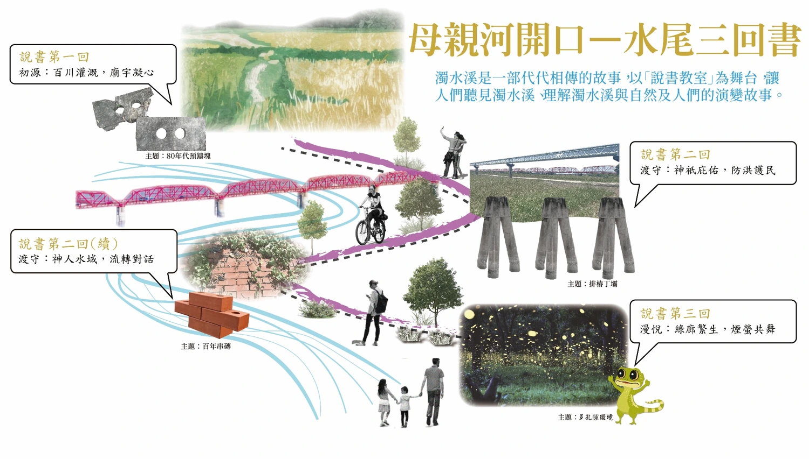
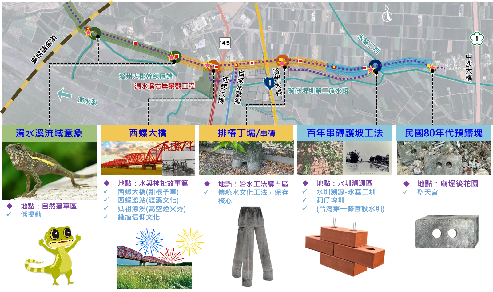
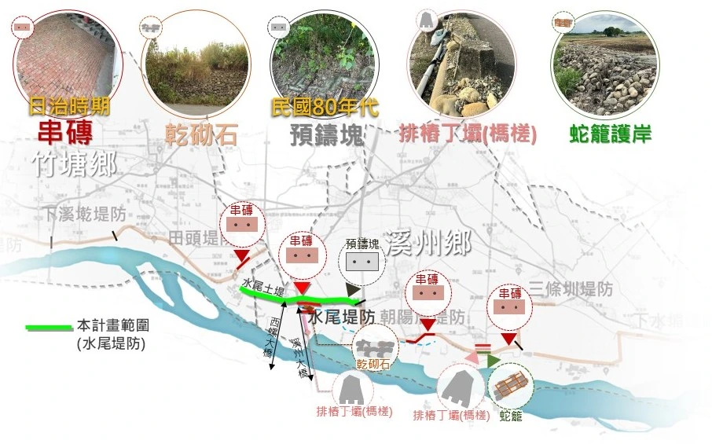

第一回
初源
百川灌溉、廟宇寧心
從廟埕後花園與水圳溯源出發，認識莿仔埤圳、永基二圳，以及堤防與日常生活的連結。
01 / 規劃願景
堤防不僅是防洪設施，更成為承載歷史、教育與文化傳承的場域。以水尾堤防百年歷史變遷，透過「人、水、神」三者互動，形成連續的「走讀軸線」。
保留傳統工法，結合步行、休憩及文化導覽，讓百年舊堤成為認識地方故事的戶外說書教室。
02 / 母親河開口
沿著河岸，走過灌溉、守護與自然的故事。
第一回
從廟埕後花園與水圳溯源出發，認識莿仔埤圳、永基二圳，以及堤防與日常生活的連結。
第二回
串起排樁丁壩、百年串磚與西螺大橋，走讀治水工法、渡溪文化與地方信仰。
第三回
走入自然蔓草區，以低擾動方式保留河岸樣貌，感受路廊、生態與地方生活。


04 / 傳統歷史工法
從串磚、乾砌石到排樁丁壩，
閱讀不同時期的堤防工法。

05 / 議題圖資地圖
整合周邊水文化、地方信仰與設施資訊，
認識堤防與地方生活的連結。